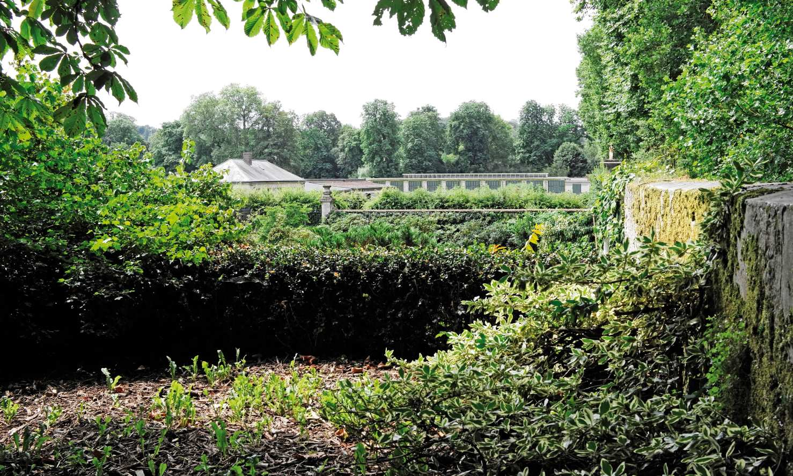

Survolez l'image et agrandissez/réduisez la vue à l'aide de la molette.
Budget: 850 000€ HT
Surface: 643m² (planchers) et 400m² (extérieurs)
Date début: 2016
Date fin: 2019
Maîtrise d'ouvrage: Ecole Nationale Supérieure de Paysage de Versailles
Co-traitant(s): Alexandre Chemetoff & associés, JRSA, Terranergie, Génie Acoustique
Description:
Le bâtiment des Suisses, a été construit en 1932 par l'architecte Armand Guéritte, alors architecte en chef du château et du parc de Versailles. Le projet de réhabilitation repose sur l'accueil des ateliers d’artistes au sein de l’École Nationale Supérieure de Paysage. Cette transformation programmatique s’accompagne de la mue de l’ancienne construction qui, à partir de ses qualités propres, s’ouvre à son environnement pour gagner une nouvelle position dans le Potager du Roi et plus généralement dans la ville.
Le bâtiment accueillera des nouveaux usages : l’enseignement des arts plastiques dans l’école, mais également des fonctions d’exposition. Le jeu de terrasses, de rampes, de passages souterrains, de murs de soutènement et de clôture, révélé par l’analyse de l’état des lieux, est réarticulé dans la proposition nouvelle par l’intermédiaire du bâtiment et de ses abords qui établissent des correspondances entre ces différents niveaux.
Le nouveau projet du bâtiment des Suisses emprunte au vocabulaire horticole du Potager qui s’accorde à la tradition de ce jardin indémodable. Les grandes baies du rez-de-chaussée, comme celles de l’étage, permettent d’accéder depuis l’extérieur à chacune des salles ou des pièces de service. Ce dispositif, favorisant les relations du dedans au dehors, ouvre le bâtiment vers le jardin, ce qui, dans une école de paysage, n’est pas la moindre de ses vertus. Cela confère ainsi, à chacune d’entre elles, une autonomie de fonctionnement appréciable. La terrasse, rendue accessible et aménagée comme un salon à ciel ouvert, permet la découverte d’un point de vue tout à fait exceptionnel : les horizons de la ville du parc et du Potager du Roi.
{kind=link}
{kind=link}
{kind=link}
{kind=link}